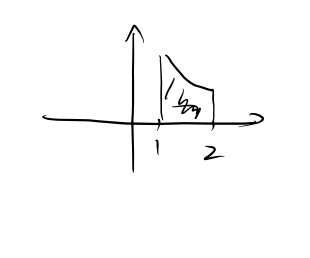
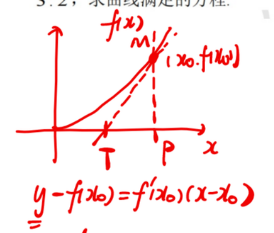
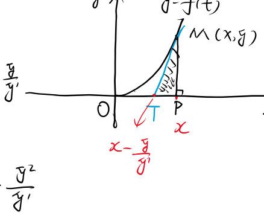
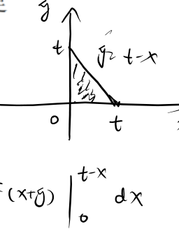

数学 · 例题集
微分方程_例题
数学 · 例题集 · 42 道例题
全量收录本板块课件例题(0516（1）、0516（2）、0723（1）、0723（2）、微分方程(1)), 按方法分组。
手写 OCR 部分数值模糊处标数值不清; 重建解答标【AI补全】。⬅ 返回 理论笔记
一、基本概念题
例 1.1 下列微分方程中, ( ) 是二阶微分方程。【0516（1）】
A. $y^2+xy=x$
B. $y^2+xy'=x$
C. $(y')^2+xy=e^x$
D. $y^2+xy''=x$
解答
① (A) 没有导数——不是微分方程微分方程必须含未知函数的导数, (A) 只是 $x,y$ 的代数方程
② (B) 最高阶导数是 $y'$——一阶阶数看最高阶导数, 不看 $y$ 本身的次数, (B) 的 $y^2$ 不影响阶数
③ (C) 含 $(y')^2$——最高阶是一阶易错: $(y')^2$ 只是导数的"次数"高, 阶数仍看导数阶数, 所以还是一阶
④ (D) 含 $y''$——二阶。选 D出现 $y''$ 即二阶, (D) 是唯一含二阶导数的选项
⭐ 经典: 阶数由最高阶导数决定, 与 $y$ 的次数无关; 含 $y''$ 才是二阶, $(y')^2$ 仍是一阶。
例 1.2 下列选项中 ( ) 是微分方程 $y''=6x+2$ 的特解, ( ) 是该方程的通解。【0516（1）】
A. $y=x^3+x^2+x+C$
B. $y=x^3+x^2+x+1$
(C) $y=x^3+x^2+C_1x+C_2$ (D) $y=x^3+C_1x^2+x+C_2$
解答
① $y''=6x+2$ 是二阶方程, 通解应含 2 个任意常数考点: 通解中任意常数的个数 = 方程阶数, 这是判断通解的硬标准
② 积分一次: $y'=3x^2+2x+C_1$; 再积分: $y=x^3+x^2+C_1x+C_2$$y''=f(x)$ 型直接连续积分两次, 每次产生一个任意常数
③ 故 (C) 是通解(2 个常数); (B) 是特解(无常数, $C_1=C_2=1$)特解 = 通解中常数取定值, (B) 正是 $C_1=C_2=1$ 的情形
④ (A) 只有 1 个常数, (D) 的常数位置不对——都不是通解(A) 缺一个常数; (D) 代入 $y''$ 得 $6x+2C_1\neq6x+2$, 根本不成解, 直接排除
⭐ 经典: 二阶方程通解含 2 个任意常数; 特解是常数取定的通解, 本题直接积分两次即可。
例 1.3 下列选项中 ( ) 是线性微分方程。【0516（1）】
A. $y^2+xy=x$
B. $y+x(y')^2=x$
C. $y'+xy=e^x$
D. $y^2+xy''=x$
解答
① (A): $y$ 有平方——非线性线性要求 $y$ 及其各阶导数都只出现一次幂, $y^2$ 直接违反
② (B): $(y')^2$——非线性导数的平方同样破坏线性
③ (C): $y'$ 和 $y$ 都是一次, 系数只含 $x$, 右边 $e^x$ 只含自变量——线性考点: 线性方程标准形 $y'+P(x)y=Q(x)$; 允许 $P$ 与 $y$ 相乘, 允许右端只含 $x$
④ (D): $y^2$——非线性。选 C$y^2$ 是 $y$ 的二次, 破坏线性
⭐ 经典: 线性 = $y$ 及其各阶导数均为一次且不相互相乘; 出现 $y^2$、$(y')^2$ 即非线性。
二、可分离变量的微分方程
例 2.1 求微分方程 $(xy^2+x)dx+(y-x^2y)dy=0$ 的通解。【0516（1）】
- 考点: 提公因式 → 分离变量
- 理论可分离变量 相关例 2.2 同法, 本题只求通解、彼题加初值定常数
解答
① 提公因式: $x(y^2+1)dx=y(x^2-1)dy$移项后两侧分别提公因式 $x$ 和 $y$, 为分离变量做准备
② 分离: $\frac{x}{x^2-1}dx=\frac{y}{y^2+1}dy$这是可分离变量型: 把 $y$ 和 $dy$ 移到一侧, $x$ 和 $dx$ 移到另一侧再积分
③ 两边积分: $\frac12\ln|x^2-1|=\frac12\ln(y^2+1)+\ln C$$\int\frac{x}{x^2-1}dx$ 用凑微分(分子恰为分母导数之半); $y^2+1>0$ 恒正可不加绝对值
④ 化简: $\ln\frac{|x^2-1|}{y^2+1}=\ln C^2$ ⇒ $x^2-1=C(y^2+1)$ 【AI补全】两边乘 2 后指数化, 常数并入 $C$; 通解写成隐式即可
⭐ 经典: 可分离变量: 提公因式后 $x$、$y$ 分居两侧, 逐项积分得隐式通解 $x^2-1=C(y^2+1)$。
例 2.2 求微分方程 $y'=\frac{1+x}{x}\,y$ 满足 $y(1)=e$ 的特解。【0516（1）, 题面按视觉转写定稿】
- 考点: 分离变量 + 初始条件定常数
- 理论可分离变量 相关例 2.3 同为分离+初值, 本题分离出 $\ln y$, 彼题分离出 $\ln(y^2+2)$
解答
① 分离: $\frac{dy}{y}=\frac{1+x}{x}\,dx=\left(\frac1x+1\right)dx$先拆 $\frac{1+x}{x}=\frac1x+1$——右端本就是"$x$ 的函数"形式, 交叉相乘即可分离
② 积分: $\ln|y|=\ln|x|+x+C$ ⇒ $y=Cx\,e^x$$\int\frac1x dx=\ln|x|$, 合并: $\ln|y|=\ln|x|+x+C$, 指数化得 $y=\pm e^C\cdot x e^x$, 记为 $Cxe^x$
③ 代入 $y(1)=e$: $e=C\cdot1\cdot e^1$ ⇒ $C=1$初始条件代入通解定常数
④ 特解: $y=xe^x$初值为正定正号; 全程不需要开方, 符号由 $e^C$ 吸收
⭐ 经典: 可分离 + 初值定常数; 右端先拆项再积分, $\ln$ 合并后指数化一步出通解。
例 2.3 微分方程 $2yy'-y^2-2=0$ 满足条件 $y(0)=1$ 的特解 $y=$______。【0723（1）, 题面按视觉转写定稿】
- 考点: 分离变量 + 初始条件
- 理论可分离变量 相关例 2.2 同流程, 本题利用 $2yy'=(y^2)'$ 一步化整
解答
① 改写: $2y\frac{dy}{dx}=y^2+2$ ⇒ $\frac{d(y^2)}{y^2+2}=dx$考点: 左端 $2yy'=(y^2)'$ 恰是 $y^2$ 的导数——把 $y^2$ 当成整体变量 $u$, 方程化为 $\frac{du}{u+2}=dx$, 不用解出 $y'$ 也能分离
② 积分: $\ln(y^2+2)=x+C$$\int\frac{du}{u+2}=\ln|u+2|$; 由 $y^2+2>0$ 绝对值可去
③ 代入 $y(0)=1$: $\ln3=C$初值代入定常数
④ 特解: $y^2+2=3e^x$ ⇒ $y=\sqrt{3e^x-2}$$y(0)=1>0$ 取正根; 代回验算: $2yy'=2y\cdot\frac{3e^x}{2y}=3e^x=y^2+2$ ✓ 与课件答案一致
⭐ 经典: 见到 $yy'$ 先想 $(y^2)'=2yy'$——"配整体导数"后方程立刻可分离, 免去 $\arctan$ 积分。
三、齐次方程 (令 $u=y/x$)
例 3.1 解方程 $y'=e^{y/x}+\frac{y}{x}$。【0516（1）】
- 考点: 齐次方程标准流程
- 理论齐次方程 相关例 3.2 同标准换元, 彼题多初值定常数与部分分式
解答
① 令 $u=\frac{y}{x}$, 则 $y=xu$, $y'=u+xu'$考点: 齐次方程标准代换; $y'=u+xu'$ 来自乘积求导法则
② 代入: $u+xu'=e^u+u$ ⇒ $xu'=e^u$代入后 $u$ 恰好抵消——这正是齐次代换的目的: 化为 $u$ 与 $x$ 的可分离方程
③ 分离: $e^{-u}du=\frac{dx}{x}$把 $u$ 与 $x$ 分到两侧, 此时已是可分离变量型
④ 积分: $-e^{-u}=\ln|x|+C$ ⇒ $e^{-u}=C-\ln|x|$$\int e^{-u}du=-e^{-u}$; 整理成 $e^{-u}$ 的显式形式便于代回
⑤ 代回 $u=y/x$: $e^{-y/x}+\ln|x|=C$ 【AI补全】齐次方程的收官步骤: 一定把 $u$ 还原为 $y/x$, 通解中不能再出现 $u$
⭐ 经典: 齐次方程: 令 $u=y/x$, 代入后必然可分离, 积分完记得把 $u$ 代回 $y/x$。
例 3.2 求 $x^2y'+xy=y^2$, $y(1)=1$ 的特解。【0516（1）】
- 考点: 先标准化 → 齐次 → 初始条件
- 理论齐次方程 相关例 3.3 同为齐次+初值, 本题积分用部分分式、彼题用凑微分
解答
① 标准化: $y'=\frac{y^2-xy}{x^2}=\left(\frac{y}{x}\right)^2-\frac{y}{x}$两边除以 $x^2$ 把右端凑成 $y/x$ 的函数——齐次方程的识别标准
② 令 $u=y/x$: $u+xu'=u^2-u$ ⇒ $xu'=u^2-2u$考点: 代入 $y'=u+xu'$ 后必然化为 $u$ 与 $x$ 的可分离方程
③ 分离: $\frac{du}{u(u-2)}=\frac{dx}{x}$分母是乘积形式, 提示下一步用部分分式拆分
④ 部分分式: $\frac12\left(\frac{1}{u-2}-\frac{1}{u}\right)du=\frac{dx}{x}$$\frac1{u(u-2)}=\frac12(\frac1{u-2}-\frac1u)$, 拆开后每一项都能直接积分
⑤ 积分: $\frac12\ln\left|\frac{u-2}{u}\right|=\ln|x|+\ln C$ ⇒ $\frac{u-2}{u}=Cx^2$对数差合并为商的对数, 指数化后常数并入 $C$
⑥ $y(1)=1$ ⇒ $u(1)=1$, 代入: $\frac{1-2}{1}=C$ ⇒ $C=-1$初值先换算成 $u(1)=y(1)/1$ 再代入 $u$ 的通解
⑦ 代回: $\frac{u-2}{u}=-x^2$ ⇒ $u-2=-x^2u$ ⇒ $u=\frac{2}{1+x^2}$ ⇒ $y=\frac{2x}{1+x^2}$ 【AI补全】解出 $u$ 后乘 $x$ 还原; 验算: $x^2y'+xy=\frac{4x^2}{(1+x^2)^2}=y^2$ 且 $y(1)=1$, 成立
⭐ 经典: 齐次方程 + 部分分式积分; 初值换成 $u(1)$ 定 $C=-1$, 特解 $y=\frac{2x}{1+x^2}$。
例 3.3 微分方程 $xy'+y(\ln x-\ln y)=0$ 满足条件 $y(1)=e^3$ 的解为 $y=$______。【0723（1）】
- 考点: 齐次方程识别($\ln x-\ln y=\ln(x/y)$) + 初始条件
- 理论齐次方程 碰撞例 3.2 同齐次+初值: 彼题右端一眼是 $y/x$ 的函数, 本题须先合并 $\ln$ 才现齐次结构
解答
① 改写: $y'+\frac{y}{x}\ln\frac{x}{y}=0$ ⇒ $y'=\frac{y}{x}\ln\frac{y}{x}$考点: $\ln x-\ln y=\ln\frac{x}{y}=-\ln\frac{y}{x}$, 把 $\ln$ 的差化成 $\ln(y/x)$ 才能看出齐次结构
② 令 $u=y/x$: $u+xu'=u\ln u$ ⇒ $xu'=u(\ln u-1)$代入 $y'=u+xu'$ 后化为 $u$ 的可分离方程
③ 分离: $\frac{du}{u(\ln u-1)}=\frac{dx}{x}$分母含 $u$ 和 $\ln u$, 提示用凑微分: $d(\ln u-1)=\frac{du}{u}$
④ 积分: $\ln|\ln u-1|=\ln|x|+\ln C$ ⇒ $\ln u-1=Cx$$\int\frac{du}{u(\ln u-1)}=\ln|\ln u-1|$ 是凑微分; 对数相消后指数化
⑤ 代入 $y(1)=e^3$ ⇒ $u(1)=e^3$, $\ln e^3-1=3-1=2=C$初值 $y(1)=e^3$ 对应 $u(1)=e^3$, 代入定出 $C=2$
⑥ $\ln u=2x+1$ ⇒ $u=e^{2x+1}$ ⇒ $y=xe^{2x+1}$最后还原 $y=xu$; 可代入原方程验证成立
⭐ 经典: 由 $\ln x-\ln y=-\ln(y/x)$ 识别齐次型; 凑微分积 $\ln u$, 再用初值定 $C$。
四、一阶线性微分方程
例 4.1 求方程 $\frac{dy}{dx}-\frac{2y}{x+1}=(x+1)^{5/2}$ 的通解。【0516（1）】
- 考点: 标准一阶线性, $P(x)=-\frac{2}{x+1}$, $Q(x)=(x+1)^{5/2}$
- 理论一阶线性方程 相关例 4.2 同用通解公式, 彼题积分多一步分部
解答
① 计算 $\int P\,dx=\int -\frac{2}{x+1}dx=-2\ln|x+1|$一阶线性方程 $y'+P(x)y=Q(x)$ 求解先算 $\int Pdx$, 这是公式法的第一步
② 积分因子: $e^{\int Pdx}=e^{-2\ln|x+1|}=(x+1)^{-2}$$e^{a\ln b}=b^a$ 把积分因子化简为幂函数, 本题中 $\ln$ 恰好消失
③ $e^{-\int Pdx}=(x+1)^2$公式后半需要 $e^{-\int Pdx}$, 取倒数即可
④ 套公式: $y=(x+1)^2\left[\int (x+1)^{5/2}\cdot(x+1)^{-2}dx+C\right]$通解公式 $y=e^{-\int Pdx}\left[\int Q\,e^{\int Pdx}dx+C\right]$; 把 $Q$ 与积分因子相乘
⑤ $=(x+1)^2\left[\int (x+1)^{1/2}dx+C\right]=(x+1)^2\left[\frac23(x+1)^{3/2}+C\right]$ 【AI补全】指数相加得 $(x+1)^{1/2}$; 幂函数积分 $\int(x+1)^{1/2}dx=\frac23(x+1)^{3/2}$, 别忘了 $+C$
⭐ 经典: 一阶线性公式法: 积分因子 $(x+1)^{-2}$ 使 $\ln$ 消失, 幂函数直接积分得通解。
例 4.2 求微分方程 $xy'+2y=x\ln x$ 的特解, 其中 $y(1)=-\frac19$。【0516（1）, 初值按视觉转写定稿】
- 考点: 化为标准型再用公式
- 理论一阶线性方程 相关例 4.1 同公式法; 本题 $\int x^2\ln x\,dx$ 须分部积分
解答
① 标准化: $y'+\frac{2}{x}y=\ln x$两边除以 $x$ 化成 $y'+P(x)y=Q(x)$ 标准形, 其中 $P=\frac2x$, $Q=\ln x$
② $\int P\,dx=\int\frac{2}{x}dx=2\ln|x|$, $e^{\int Pdx}=x^2$积分因子 $e^{\int\frac2x dx}=x^2$, $e^{a\ln b}=b^a$ 消去对数
③ $y=\frac{1}{x^2}\left[\int \ln x\cdot x^2\,dx+C\right]$套通解公式: $y=e^{-\int Pdx}[\int Q\,e^{\int Pdx}dx+C]$
④ $\int x^2\ln x\,dx$ 分部积分: $=\frac{x^3}{3}\ln x-\int\frac{x^3}{3}\cdot\frac1x dx=\frac{x^3}{3}\ln x-\frac{x^3}{9}$考点: $\ln x$ 与多项式之积用分部积分, 取 $u=\ln x$, $dv=x^2dx$; $(\ln x)'=\frac1x$ 使积分幂次不升反降
⑤ $y=\frac{x}{3}\ln x-\frac{x}{9}+\frac{C}{x^2}$, 代入 $y(1)=-\frac19$: $-\frac19=0-\frac19+C$ ⇒ $C=0$$x=1$ 时 $\frac{x}3\ln x=0$; $C=0$ 说明特解恰为 $\frac{x}3\ln x-\frac{x}9$——初值选得好, 常数正好为 0
⭐ 经典: 一阶线性公式 + 分部积分; 思路为标准化 → 积分因子 → 分部积分 → 定 $C$。
例 4.3 $y=y(x)$ 是微分方程 $y'-xy=\frac{e^{x^2/2}}{2\sqrt{x}}$ 满足 $y(1)=\sqrt{e}$ 的特解。【0723（1）】

课件原图展开
📐 课件原图: 微分方程特解的曲线示意（微分方程(1) 页8）
(1) 求 $y(x)$; (2) 设 $D=\{(x,y)\mid 1\le x\le2, 0\le y\le y(x)\}$, 求 $D$ 绕 $x$ 轴旋转一周所得旋转体体积。
- 考点: 一阶线性 + 旋转体体积
- 理论一阶线性方程 相关例 4.1 同公式法, 本题 $Q$ 与积分因子中 $e^{x^2/2}$ 对消而化简
解答
① (1) $P(x)=-x$, $\int Pdx=-\frac{x^2}{2}$标准形 $y'-xy=Q(x)$ 中 $P=-x$, 先算 $\int Pdx$ 求积分因子
② $y=e^{x^2/2}\left[\int\frac{e^{x^2/2}}{2\sqrt{x}}\cdot e^{-x^2/2}dx+C\right]=e^{x^2/2}\left[\int\frac{dx}{2\sqrt{x}}+C\right]$套公式后 $e^{x^2/2}$ 与 $e^{-x^2/2}$ 相乘约掉, 积分变得简单——这是出题人的设计
③ $=e^{x^2/2}(\sqrt{x}+C)$, 代入 $y(1)=\sqrt{e}$: $\sqrt{e}=e^{1/2}(1+C)$ ⇒ $C=0$$\int\frac{dx}{2\sqrt{x}}=\sqrt{x}$; 初值代入后两边同除 $e^{1/2}$ 得 $C=0$
④ $y(x)=\sqrt{x}\,e^{x^2/2}$特解确定, 供第 (2) 问积分使用
⑤ (2) $V=\pi\int_1^2 y^2(x)dx=\pi\int_1^2 x\,e^{x^2}dx$绕 $x$ 轴旋转体体积 $V=\pi\int_a^b y^2dx$; 平方后 $e^{x^2/2}$ 变 $e^{x^2}$
⑥ $=\frac\pi2\left[e^{x^2}\right]_1^2=\frac\pi2(e^4-e)$凑微分: $d(e^{x^2})=2xe^{x^2}dx$, 故 $\int xe^{x^2}dx=\frac12e^{x^2}$
⭐ 经典: 一阶线性通解公式 + 旋转体体积; $e^{x^2/2}$ 对消使积分化简, 体积用凑微分一次积出。
例 4.4 微分方程 $y\,dx+(x-3y^2)dy=0$ 满足条件 $y|_{x=1}=1$ 的解为 $y=$______。【0723（1）】
- 考点: $x$ 和 $y$ 对调, 把 $x$ 当未知函数
- 理论一阶线性方程 相关例 5.4 同"变量对调"思路: 解不出 $y'$ 时改把 $x$ 当未知函数
解答
① 改写为 $\frac{dx}{dy}$: $\frac{dx}{dy}=-\frac{x-3y^2}{y}=-\frac{x}{y}+3y$考点: 方程难解出 $y'$ 时, 把 $x$ 当作 $y$ 的函数重写——微分形式 $Mdx+Ndy=0$ 提示对调变量
② 即 $\frac{dx}{dy}+\frac{1}{y}\cdot x=3y$——关于 $x$ 的一阶线性这是关于 $x(y)$ 的标准一阶线性方程: 未知函数是 $x$, 自变量是 $y$
③ $P(y)=\frac1y$, $\int Pdy=\ln|y|$, 积分因子 $=y$$e^{\int\frac1y dy}=y$; 积分因子恰为 $y$ 使下一步积分简单
④ $x=\frac1y\left[\int 3y\cdot y\,dy+C\right]=\frac1y(y^3+C)=y^2+\frac{C}{y}$套公式后 $\int 3y^2dy=y^3$, 除以 $y$ 得解
⑤ $x=1,y=1$: $1=1+C$ ⇒ $C=0$ ⇒ $x=y^2$ ⇒ $y=\sqrt{x}$初值 $y|_{x=1}=1$ 即 $x=1$ 时 $y=1$; 由 $y=1>0$ 取正根
⭐ 经典: 变量对调: 把 $x$ 当未知函数, 化为关于 $y$ 的一阶线性; 积分因子 $y$ 使解简化为 $x=y^2$。
五、可降阶的高阶方程 (数一、数二)
例 5.1 求微分方程 $y'''=e^{2x}-\cos x$ 的通解。【0516（1）, 阶数按视觉转写定稿】
解答
① 第一次积分: $y''=\frac12 e^{2x}-\sin x+C_1$$y^{(n)}=f(x)$ 型直接积分: $\int e^{2x}dx=\frac12e^{2x}$, $\int(-\cos x)dx=-\sin x$, 每积一次加一个常数
② 第二次积分: $y'=\frac14 e^{2x}+\cos x+C_1x+C_2$$C_1$ 积成 $C_1x$——常数项积分后是"一次多项式", 依次升次
③ 第三次积分: $y=\frac18 e^{2x}+\sin x+\frac{C_1}{2}x^2+C_2x+C_3$三个任意常数对应三阶方程; 注意 $C_1x$ 积分得 $\frac{C_1}2x^2$——惯例写成 $\frac12C_1x^2$ 形式
⭐ 经典: $y^{(n)}=f(x)$ 积分 $n$ 次, 每积一次加一个任意常数, 常数项依次升为 $x$ 的多项式; 答案含 $C_1,C_2,C_3$ 即可。
例 5.2 求微分方程 $(1+x^2)y''=2xy'$ 满足初始条件 $y(0)=1$, $y'(0)=3$ 的特解。【0516（1）】
解答
① 令 $y'=p$, 则 $y''=p'$: $(1+x^2)p'=2xp$考点: 缺 $y$ 型 $y''=f(x,y')$, 令 $p=y'$ 降为一阶方程
② 分离: $\frac{dp}{p}=\frac{2x}{1+x^2}dx$降阶后是可分离变量方程, 把 $p$ 与 $x$ 分到两侧
③ 积分: $\ln|p|=\ln(1+x^2)+\ln C_1$ ⇒ $p=C_1(1+x^2)$$\int\frac{2x}{1+x^2}dx=\ln(1+x^2)$ 是凑微分; 指数化后 $p$ 是 $x$ 的二次式
④ $y'(0)=3$: $3=C_1(1+0)$ ⇒ $C_1=3$先用 $y'(0)$ 定 $C_1$, 初值使用顺序与降阶过程对应
⑤ $y'=3(1+x^2)$, 积分: $y=3x+x^3+C_2$还原 $p=y'$ 后再次积分回到 $y$
⑥ $y(0)=1$: $1=C_2$ ⇒ $y=x^3+3x+1$再用 $y(0)$ 定 $C_2$; 两个初值依次确定两级常数
⭐ 经典: 缺 $y$ 型降阶: 令 $p=y'$ 化一阶可分离, 初值按 $y'(0)$、$y(0)$ 顺序分别定常数。
例 5.3 求微分方程 $yy''-(y')^2=0$ 的通解。【0516（1）】
解答
① 令 $y'=p$, $y''=p\frac{dp}{dy}$: $y\cdot p\frac{dp}{dy}-p^2=0$考点: 缺 $x$ 型 $y''=f(y,y')$, 令 $p=y'$ 并把 $y''$ 写成 $p\frac{dp}{dy}$, 以 $y$ 为自变量
② 情况一: $p=0$ ⇒ $y=C$(常数解, 含在通解中)提 $p$ 时注意 $p=0$ 是可能解, 不可两边直接除以 $p$
③ 情况二: $p\neq0$, $y\frac{dp}{dy}=p$ ⇒ $\frac{dp}{p}=\frac{dy}{y}$$p\neq0$ 时约去 $p$, 分离变量
④ 积分: $\ln|p|=\ln|y|+\ln C_1$ ⇒ $p=C_1y$两边取指数: $p$ 与 $y$ 成正比
⑤ $\frac{dy}{dx}=C_1y$ ⇒ 分离: $\frac{dy}{y}=C_1dx$ ⇒ $\ln|y|=C_1x+\ln C_2$把 $p=y'$ 代回, 再解一次分离变量方程
⑥ 通解: $y=C_2e^{C_1x}$指数化即得通解; 当 $C_1=0$ 时退化为常数解 $y=C_2$, 故情况一含于通解
⭐ 经典: 缺 $x$ 型: $y''=p\frac{dp}{dy}$ 换元, 两次分离变量; 常数解自动含于 $C_1=0$ 的通解中。
例 5.4 求微分方程 $y''(x+y'^2)=y'$ 满足初始条件 $y(1)=y'(1)=1$ 的特解。【0723（1）】
解答
① 令 $y'=p$, $y''=p'$: $p'(x+p^2)=p$ ⇒ $\frac{dp}{dx}=\frac{p}{x+p^2}$缺 $y$ 型令 $p=y'$; 注意这里解不出 $p'$ 的显式表达式
② 翻转: $\frac{dx}{dp}=\frac{x+p^2}{p}=\frac{x}{p}+p$考点: 解不出 $p'$ 时把 $p$ 当自变量、$x$ 当未知函数, 方程反而变成线性的
③ 关于 $x$ 的一阶线性: $\frac{dx}{dp}-\frac{1}{p}x=p$整理成 $x'(p)-\frac1p x=p$ 的标准形, 未知函数是 $x(p)$
④ 积分因子 $\frac1p$: $x=p\left[\int p\cdot\frac1p\,dp+C\right]=p(p+C)$$e^{-\int\frac1p dp}=\frac1p$; 于是 $\frac{x}{p}=\int1\,dp=p+C$
⑤ $x=1,p=1$: $1=1(1+C)$ ⇒ $C=0$ ⇒ $x=p^2$ ⇒ $p=\sqrt{x}$初值 $y'(1)=1$ 即 $p(1)=1$, 定 $C=0$; 由 $p(1)=1>0$ 取正根
⑥ $y'=\sqrt{x}$ ⇒ $y=\frac23 x^{3/2}+C$; $y(1)=1$ ⇒ $C=\frac13$ ⇒ $y=\frac23 x^{3/2}+\frac13$ 【AI补全】还原 $p=y'$ 后直接积分, 用 $y(1)=1$ 定第二个常数; 验算原方程成立
⭐ 经典: 缺 $y$ 型但解不出 $p'$ 时翻转变量: 把 $p$ 当自变量, 化为 $x(p)$ 的一阶线性再积分。
例 5.5 微分方程 $yy''+y'^2=0$ 满足初始条件 $y(0)=1$, $y'(0)=\frac12$ 的特解是______。【0723（1）】
解答
① 令 $y'=p$, $y''=p\frac{dp}{dy}$: $y\cdot p\frac{dp}{dy}+p^2=0$缺 $x$ 型: $y''$ 换成 $p\frac{dp}{dy}$, 以 $y$ 为自变量
② $p=0$ 时 $y=C$, 与初始条件不匹配(舍)$y'(0)=\frac12\neq0$, 常数解不满足初值, 舍去
③ $p\neq0$: $y\frac{dp}{dy}+p=0$ ⇒ $\frac{dp}{p}=-\frac{dy}{y}$约去 $p$ 后分离变量
④ $\ln|p|=-\ln|y|+\ln C_1$ ⇒ $p=\frac{C_1}{y}$指数化: $p$ 与 $y$ 成反比
⑤ $y(0)=1$, $y'(0)=\frac12$: $\frac12=\frac{C_1}{1}$ ⇒ $C_1=\frac12$初值直接代入 $p=y'$ 与 $y$ 的关系, 定出 $C_1$
⑥ $\frac{dy}{dx}=\frac{1}{2y}$ ⇒ $2y\,dy=dx$ ⇒ $y^2=x+C_2$代回 $p=y'$ 再分离变量积分
⑦ $y(0)=1$: $1=C_2$ ⇒ $y=\sqrt{x+1}$$y(0)=1>0$ 取正根; 本题快捷视角: $(yy')'=yy''+y'^2=0$ ⇒ $yy'=C$, 一步到位
⭐ 经典: 缺 $x$ 型降阶 + 双初值; 快捷法 $(yy')'=0$ 一步得 $yy'=C$, 但降阶法更通用。
六、二阶常系数齐次线性方程
例 6.1 求微分方程 $y''-7y'+6y=0$ 的通解。【0516（2）】
解答
① 特征方程: $r^2-7r+6=0$ ⇒ $(r-1)(r-6)=0$把 $y''\to r^2,\ y'\to r,\ y\to1$ 写出特征方程, 这是常系数齐次方程的固定做法
② $r_1=1$, $r_2=6$——两个不等的实根判别式 $49-24=25>0$, 两根不等
③ 通解: $y=C_1e^x+C_2e^{6x}$两不等实根 $r_1,r_2$ 对应 $y=C_1e^{r_1x}+C_2e^{r_2x}$
⭐ 经典: 两不等实根: 特征方程因式分解 → 每个根对应一项 $e^{rx}$, 相加即通解。
例 6.2 求微分方程 $y''-2y'+y=0$ 的通解。【0516（2）】
解答
① 特征方程: $r^2-2r+1=0$ ⇒ $(r-1)^2=0$完全平方式, 判别式为 0
② $r=1$ 是二重根两根相同, 单写一个 $e^x$ 不够, 还需配一个 $x$
③ 通解: $y=(C_1+C_2x)e^x$易错: 重根必须乘 $x$ 得到第二个线性无关解 $xe^x$
⭐ 经典: 二重根 $r$: 通解 $(C_1+C_2x)e^{rx}$, 别忘了第二个解乘 $x$。
例 6.3 求微分方程 $y''-6y'+13y=0$ 的通解。【0516（2）】
解答
① 特征方程: $r^2-6r+13=0$, $\Delta=36-52=-16$判别式为负, 出现共轭复根
② $r=\frac{6\pm\sqrt{-16}}{2}=3\pm2i$求根公式 $\frac{-b\pm\sqrt\Delta}{2a}$; $\sqrt{-16}=4i$
③ $\alpha=3$, $\beta=2$, 通解: $y=e^{3x}(C_1\cos2x+C_2\sin2x)$共轭复根 $\alpha\pm\beta i$ 对应 $y=e^{\alpha x}(C_1\cos\beta x+C_2\sin\beta x)$
⭐ 经典: 共轭复根 $\alpha\pm\beta i$: $y=e^{\alpha x}(C_1\cos\beta x+C_2\sin\beta x)$, 实部进指数、虚部进三角函数。
七、高阶常系数齐次线性方程
例 7.1 求方程 $y^{(4)}-2y'''+5y''=0$ 的通解。【0516（2）】
- 考点: $n$ 阶常系数齐次, 特征方程有重根和复根
- 理论$n$ 阶常系数齐次 相关例 6.2 重根结论直接搬入高阶: $r=0$ 二重根给 $C_1+C_2x$
解答
① 特征方程: $r^4-2r^3+5r^2=0$ ⇒ $r^2(r^2-2r+5)=0$四阶方程对应四次特征方程, 先提公因式 $r^2$ 降次
② $r^2=0$: $r=0$(二重根) → 对应 $C_1+C_2x$$r=0$ 二重根: $e^{0x}=1$ 与 $xe^{0x}=x$ 两个解, 即常数与一次式
③ $r^2-2r+5=0$: $r=1\pm2i$ → 对应 $e^x(C_3\cos2x+C_4\sin2x)$复根 $\alpha\pm\beta i=1\pm2i$ 按二阶情形写出, 系数改用 $C_3,C_4$
④ 通解: $y=C_1+C_2x+e^x(C_3\cos2x+C_4\sin2x)$易错: 高阶方程把各部分相加, 任意常数个数等于阶数, 共 4 个
⭐ 经典: 高阶齐次: 特征方程因式分解后分块处理, 重根与复根各自按规则写解再叠加。
例 7.2 3 阶常系数线性齐次微分方程 $y'''-2y''+y'-2y=0$ 的通解为 $y=$______。【0723（1）】
- 考点: 三阶, 因式分解求特征根
- 理论$n$ 阶常系数齐次 相关例 6.3 复根部分 $\pm i$ 即 $\alpha=0$ 的共轭复根情形 碰撞例 8.6 一正一逆: 本题由方程求通解、彼题由通解反构特征方程
解答
① 特征方程: $r^3-2r^2+r-2=0$三阶方程对应三次特征方程
② 分组分解: $r^2(r-2)+(r-2)=(r-2)(r^2+1)=0$前两项提 $r^2$ 后与后两项同含因子 $(r-2)$, 再提取公因式
③ $r_1=2$, $r_{2,3}=\pm i$$r^2+1=0$ 给出共轭复根 $\pm i$($\alpha=0,\beta=1$)
④ 通解: $y=C_1e^{2x}+C_2\cos x+C_3\sin x$实根 $2$ 配 $e^{2x}$, 复根 $\pm i$ 配 $\cos x,\sin x$($e^{0x}=1$ 故无指数因子); 共 3 个常数
⭐ 经典: 三阶特征方程用分组分解; 实根与纯虚根 $\pm i$ 分配合并成通解, 常数个数 = 阶数 3。
八、二阶常系数非齐次线性方程
例 8.1 求 $y''-2y'+y=xe^x$ 的通解。【0516（2）, 题干从OCR推断】【AI补全】
解答
① 齐次: $r^2-2r+1=0$ ⇒ $r=1$(重根) ⇒ $Y=(C_1+C_2x)e^x$先解齐次部分; 非齐次通解 = 齐次通解 $Y$ + 特解 $y^*$
② $f(x)=xe^x=P_1(x)e^x$, $\lambda=1$ 是二重特征根 ⇒ $k=2$考点: 待定系数法设 $y^*=x^kP_n(x)e^{\lambda x}$, $k$ 由 $\lambda$ 是特征根的重数决定(0/1/2)
③ 设 $y^*=x^2(ax+b)e^x=(ax^3+bx^2)e^x$$k=2$ 乘 $x^2$; 多项式次数与 $f$ 中 $P_1(x)$ 同次(一次)
④ 求导代入 $y''-2y'+y=f$, 比较系数: 得 $6ax+2b=x$ ⇒ $a=\frac16,\ b=0$ 【AI补全】计算 $y^{*\prime},y^{*\prime\prime}$ 代入, $e^x$ 整体约掉后比较 $x$ 各次幂系数; $x^2$ 项自动抵消(因 $\lambda$ 是特征根)
⑤ $y^*=\frac16x^3e^x$; 通解: $y=(C_1+C_2x)e^x+\frac16x^3e^x$【课件 OCR 的 $-\frac12x^3-x^2$ 代入不符, 数值不清; 原"最终"式符号亦错, 以重解为准】【AI补全】验算: 将 $\frac16x^3e^x$ 代入 $y''-2y'+y$ 恰得 $xe^x$, 结果可信
⭐ 经典: $\lambda$ 是二重特征根时 $y^*$ 乘 $x^2$; 比较系数得 $y^*=\frac16x^3e^x$, 通解为 $Y+y^*$。
例 8.2 求 $y''-3y'+2y=2xe^x$ 的通解。【0516（2）】
解答
① 齐次: $r^2-3r+2=0$ ⇒ $r_1=1,r_2=2$ ⇒ $Y=C_1e^x+C_2e^{2x}$两不等实根, 齐次通解两部分
② $f(x)=2xe^x$, $\lambda=1$ 是单特征根 ⇒ $k=1$$\lambda=1$ 与特征根 $r_1=1$ 重合一次, 故 $k=1$(只乘一个 $x$)
③ 设 $y^*=x(ax+b)e^x=(ax^2+bx)e^x$$k=1$ 乘 $x$; 多项式仍取一次 $ax+b$
④ 求 $y^{*\prime},y^{*\prime\prime}$ 代入方程, 比较系数对 $(ax^2+bx)e^x$ 求导用乘积法则, $e^x$ 提出后各项系数合并
⑤ 课件推导: $-2a=2$ ⇒ $a=-1$, $2a-b=0$ ⇒ $b=-2$代入后 $x^2$ 项系数自动抵消(因 $\lambda$ 是特征根), 只剩一次与常数项, 比较得 $a,b$
⑥ $y^*=e^x(-x^2-2x)$, 通解: $y=C_1e^x+C_2e^{2x}-e^x(x^2+2x)$非齐次通解 = 齐次通解 + 特解; 特解带负号并入括号亦可
⭐ 经典: $\lambda$ 为单特征根 ⇒ $y^*$ 乘一个 $x$; 代入后 $x^2$ 项抵消, 比较一次项与常数项定 $a,b$。
例 8.3 微分方程 $y''+y=x^2+1+\sin x$ 的特解形式可设为 ( )。【0516（2）】
(A) $y^*=ax^2+bx+c+x(A\sin x+B\cos x)$
(B) $y^*=ax^2+bx+c+A\sin x$
(C) $y^*=x(ax^2+bx+c+A\sin x+B\cos x)$
(D) $y^*=ax^2+bx+c+A\cos x$
解答
① 齐次特征方程: $r^2+1=0$ ⇒ $r=\pm i$特征根是纯虚根 $\pm i$, 后面判断 $\sin x$ 是否"共振"要用
② $f(x)$ 分两部分: $f_1=x^2+1=P_2(x)e^{0x}$, $\lambda=0$ 不是特征根 ⇒ $k=0$, 设 $ax^2+bx+c$考点: 叠加原理——右端是两项之和, 分别设特解再相加; 多项式 $x^2+1$ 看成 $P_2(x)e^{0x}$
③ $f_2=\sin x$: $\lambda=0,\beta=1$, $\pm i$ 是特征根 ⇒ $k=1$, 必须同时设 $\sin$ 和 $\cos$, 乘 $x$: $x(A\sin x+B\cos x)$易错: 右端只有 $\sin x$, 但特解必须 $\sin$、$\cos$ 成对出现, 且 $\pm i$ 是特征根要乘 $x$ 防"共振"
④ 叠加: $y^*=ax^2+bx+c+x(A\sin x+B\cos x)$。选 A两部分特解相加即选项 A; (B)(D) 漏了 $\sin$、$\cos$ 成对与乘 $x$, (C) 错误地把多项式部分也乘了 $x$
⭐ 经典: 叠加原理: 多项式与三角分别设特解; 特征根 $\pm i$ 使 $\sin$ 部分乘 $x$ 且 $\sin$、$\cos$ 成对出现。
例 8.4 已知微分方程 $y''+ay'+by=ce^x$ 的通解为 $y=(C_1+C_2x)e^{-x}+e^x$, 则 $a,b,c$ 依次为 ( )。【0723（1）】
A. $1,0,1$
B. $1,0,2$
C. $2,1,3$
D. $2,1,4$
解答
① 齐次通解 $(C_1+C_2x)e^{-x}$ ⇒ $r=-1$ 是二重特征根通解中 $e^{-x}$ 前的 $(C_1+C_2x)$ 说明 $-1$ 是二重根
② 特征方程: $(r+1)^2=r^2+2r+1=0$ ⇒ $a=2$, $b=1$特征方程与 $r^2+ar+b=0$ 逐项对应
③ 非齐次特解 $e^x$: 代入 $y''+2y'+y=ce^x$已知通解中非齐次部分就是 $e^x$, 把它代入方程可反解 $c$
④ $(e^x)''+2(e^x)'+e^x=e^x+2e^x+e^x=4e^x=ce^x$ ⇒ $c=4$$e^x$ 求导不变, 直接数系数: $1+2+1=4$
⑤ $a=2,b=1,c=4$。选 D将 $a,b,c$ 与四个选项核对, 只有 (D) $2,1,4$ 符合
⭐ 经典: 由通解反推: 齐次部分形状定 $a,b$, 非齐次特解代入定 $c$; $e^x$ 代入系数相加即可。
例 8.5 若二阶常系数线性齐次微分方程 $y''+ay'+by=0$ 的通解为 $y=(C_1+C_2x)e^x$, 则非齐次方程 $y''+ay'+by=x$ 满足 $y(0)=2$, $y'(0)=0$ 的解为______。【0723（1）】
解答
① $(C_1+C_2x)e^x$ ⇒ $r=1$ 是二重根 ⇒ $a=-2$, $b=1$$(r-1)^2=r^2-2r+1$ 展开得 $a=-2,b=1$; 注意 $a$ 带负号
② 非齐次: $y''-2y'+y=x$, $f(x)=xe^{0x}$, $\lambda=0$ 不是特征根 ⇒ $k=0$$\lambda=0$ 与特征根 $1$(二重) 不重合, 特解不乘 $x$
③ 设 $y^*=Ax+B$, 代入: $0-2A+Ax+B=x$$y^*$ 是一次多项式: $y^{*\prime\prime}=0$, $y^{*\prime}=A$
④ 系数比较: $A=1$, $B-2A=0$ ⇒ $B=2$, 故 $y^*=x+2$$x$ 的系数: $A=1$; 常数项: $B-2A=0$
⑤ 通解: $y=(C_1+C_2x)e^x+x+2$非齐次通解 = 齐通 + 特解
⑥ $y(0)=C_1+2=2$ ⇒ $C_1=0$; $y'(0)=C_2e^0+C_1e^0+1=0$ ⇒ $C_2=-1$$y'=C_2e^x+(C_1+C_2x)e^x+1$, 在 $x=0$ 处取值; 两个初值依次定两个常数
⑦ 特解: $y=-xe^x+x+2$$C_1=0$ 使齐次部分 $(C_1+C_2x)e^x$ 变为 $-xe^x$
⭐ 经典: 齐次通解反推系数 → 待定系数求特解 → 双初值定常数, 一题串起三类考点。
例 8.6 在下列微分方程中, 以 $y=C_1e^x+C_2\cos2x+C_3\sin2x$ 为通解的是 ( )。【0723（1）】
A. $y'''+y''-4y'-4y=0$
B. $y'''+y''+4y'+4y=0$
(C) $y'''-y''-4y'+4y=0$ (D) $y'''-y''+4y'-4y=0$
解答
① 解的形式 ⇒ 特征根: $r_1=1$, $r_{2,3}=\pm2i$$e^x$ 对应根 $1$; $\cos2x,\sin2x$ 对应纯虚根 $\pm2i$
② 特征方程: $(r-1)(r-2i)(r+2i)=(r-1)(r^2+4)=r^3-r^2+4r-4=0$按根构造特征方程: 每个根 $r_i$ 给一个因子 $(r-r_i)$; 共轭因子相乘 $(r-2i)(r+2i)=r^2+4$
③ 即 $y'''-y''+4y'-4y=0$。选 D特征方程 $r^3-r^2+4r-4=0$ 逐项映射回微分方程: $r^n$ 对应 $y^{(n)}$
⭐ 经典: 由通解反推方程: 根→特征方程→逐项映射, $(r-1)(r^2+4)$ 展开即可。
九、线性方程解的结构
例 9.1 设非齐次线性微分方程 $y'+P(x)y=Q(x)$ 有两个不同的解 $y_1(x)$ 与 $y_2(x)$, $C$ 为任意常数, 则该方程的通解是 ( )。【0516（1）】
A. $C[y_1(x)-y_2(x)]$
B. $y_1(x)+C[y_1(x)-y_2(x)]$
(C) $C[y_1(x)+y_2(x)]$ (D) $y_1(x)+C[y_1(x)+y_2(x)]$
解答
① $y_1-y_2$ 是齐次方程的解(非齐次的两个特解相减得齐次解)考点: 设 $L(y)=y'+Py$, 则 $L(y_1-y_2)=L(y_1)-L(y_2)=Q-Q=0$, 相减恰好消去 $Q$
② 齐次通解: $C(y_1-y_2)$一阶齐次方程的解空间是一维的, 通解为单参数 $C$ 倍
③ 非齐次通解 = 齐通 + 任一非齐特 = $C(y_1-y_2)+y_1$。选 B取 $y_1$ 作非齐特解; (A) 缺非齐特解, (C)(D) 把特解相加、相减关系弄反
⭐ 经典: 非齐通解 = 齐通 + 非齐特; 两个非齐特解之差是齐次解, 这是解结构题的核心套路。
例 9.2 已知 $y_1=1$, $y_2=x$, $y_3=x^2$ 是某二阶非齐次线性微分方程的三个解, 则该方程的通解为______。【0516（1）】
- 考点: 三个非齐特解 → 两个齐次解(线性无关) + 一个非齐特
- 理论非齐次方程的结构 相关例 9.4 同"三特解两两相减"套路, 本题为变系数、彼题为常系数
解答
① 齐次解: $y_2-y_1=x-1$, $y_3-y_1=x^2-1$二阶方程需两个线性无关的齐次解; 用两两相减构造之
② 两者线性无关($x-1$ 和 $x^2-1$ 不成比例)次数不同(一次与二次), 比值不是常数, 线性无关
③ 非齐次通解: $y=1+C_1(x-1)+C_2(x^2-1)$通解 = 非齐特解 $y_1=1$ + 齐次通解
④ 或等价: $y=C_1+C_2x+x^2$ (通过调整常数可相互转化)【AI补全】展开整理: $1-C_1-C_2+C_1x+C_2x^2$, 把常数项并入 $C_1$ 即得标准形式
⭐ 经典: 三特解两两相减得两个无关齐次解, 任取一个特解相加; 两种写法常数可互相吸收。
例 9.3 若 $y_1=(1+x^2)^2-\sqrt{1+x^2}$, $y_2=(1+x^2)^2+\sqrt{1+x^2}$ 是微分方程 $y'+p(x)y=q(x)$ 的两个解, 则 $q(x)=$ ( )。【0723（1）】
A. $3x(1+x^2)$
B. $-3x(1+x^2)$
C. $\frac{x}{1+x^2}$
D. $-\frac{x}{1+x^2}$
解答
① $y_1-y_2=-2\sqrt{1+x^2}$ 是齐次方程的解两个非齐特解之差必是齐次解——这是求 $p(x)$ 的钥匙
② 代入 $y'+py=0$: $(-2\sqrt{1+x^2})'+p\cdot(-2\sqrt{1+x^2})=0$把齐次解代入齐次方程, 即可解出 $p$
③ $(-2\sqrt{1+x^2})'=-2\cdot\frac{x}{\sqrt{1+x^2}}=-\frac{2x}{\sqrt{1+x^2}}$复合函数求导: $(\sqrt{1+x^2})'=\frac{x}{\sqrt{1+x^2}}$
④ $-\frac{2x}{\sqrt{1+x^2}}+p\cdot(-2\sqrt{1+x^2})=0$ ⇒ $p(x)=\frac{-x}{1+x^2}$移项得 $p=-\frac{2x/\sqrt{1+x^2}}{2\sqrt{1+x^2}}=-\frac{x}{1+x^2}$
⑤ 取 $y_1$ 代入原方程: $y_1'+py_1=q$$p$ 已知后, 把任一特解代入非齐次方程即可求 $q$
⑥ $y_1'=4x(1+x^2)-\frac{x}{\sqrt{1+x^2}}$, $q=y_1'+py_1=4x(1+x^2)-\frac{x}{\sqrt{1+x^2}}-\frac{x}{1+x^2}\left((1+x^2)^2-\sqrt{1+x^2}\right)=3x(1+x^2)$。选 A【AI补全】展开: $-\frac{x}{1+x^2}\cdot(1+x^2)^2=-x(1+x^2)$, $-\frac{x}{1+x^2}\cdot(-\sqrt{1+x^2})=+\frac{x}{\sqrt{1+x^2}}$, 与 $y_1'$ 中同类项对消
⭐ 经典: 由两特解求方程: 相减得齐次解求 $p$, 再代回任选特解求 $q$; 代数对消是收尾关键。
例 9.4 已知 $y_1=e^{3x}-xe^{2x}$, $y_2=e^x-xe^{2x}$, $y_3=-xe^{2x}$ 是某二阶常系数非齐次线性微分方程的 3 个解, 则该微分方程的通解 $y=$______。【0723（1）】
- 考点: 三个解 → 提取两个线性无关的齐次解
- 理论非齐次方程的结构 相关例 9.2 同"三解两两相减"套路, 本题消掉公共项 $-xe^{2x}$ 后即得齐次解
解答
① 齐次解: $y_1-y_3=e^{3x}$, $y_2-y_3=e^x$两两相减把公共的非齐次部分 $-xe^{2x}$ 消掉, 得到两个齐次解
② $e^{3x}$ 和 $e^x$ 线性无关 → 齐通: $C_1e^x+C_2e^{3x}$指数不同底, 比值 $e^{2x}$ 不是常数, 线性无关
③ 非齐特解取 $y_3=-xe^{2x}$三个特解任取一个即可, 通常取形式最简单的
④ 通解: $y=C_1e^x+C_2e^{3x}-xe^{2x}$通解结构: 齐次通解 + 非齐次特解; 两个任意常数对应二阶方程
⭐ 经典: 三解两两相减提取 $e^{3x},e^x$ 两齐次解, 特解取最简单的 $y_3$, 相加即通解。
十、差分方程 (数三专属)
例 10.1 差分方程 $y_{t+1}-2y_t=2^t$ 的通解 $y_t=$______。【0723（1）】
- 考点: 一阶常系数非齐次差分方程, $\alpha=P$ 的情况
- 理论一阶常系数差分方程 相关例 10.2 同为 $\alpha=P$ 特解乘 $t$: 右端一个指数 $2^t$、一个多项式 $t$
解答
① 齐次: $r-2=0$ ⇒ $r=2$ ⇒ $y_t^{(h)}=C\cdot2^t$一阶常系数差分方程 $y_{t+1}-2y_t=0$ 的特征根 $r=2$, 齐次通解为 $C\cdot2^t$
② $f(t)=2^t=2^t\cdot1$, $\alpha=2$, $P=2$, $\alpha=P$ ⇒ $k=1$考点: 非齐次差分 $y_{t+1}-Py_t=P_n(t)\alpha^t$ 中, 当 $\alpha$ 等于特征根 $P$ 时特解要乘 $t$($k=1$)
③ 设 $y_t^*=t\cdot A\cdot2^t$$P_0(t)=1$ 是 0 次多项式, 故只配常数 $A$, 再乘 $t$ 防与齐次解 $C\cdot2^t$ 重复
④ 代入: $A(t+1)2^{t+1}-2At\cdot2^t=2^t$ ⇒ $2A\cdot2^t=2^t$ ⇒ $A=\frac12$$2^{t+1}=2\cdot2^t$, 展开后含 $t$ 的两项 $2At\cdot2^t$ 与 $-2At\cdot2^t$ 对消, 只剩 $2A\cdot2^t$
⑤ $y_t^*=\frac12 t\cdot2^t$特解确定
⑥ 通解: $y_t=C\cdot2^t+\frac12 t\cdot2^t$非齐通解 = 齐次通解 + 特解, 可合并为 $(C+\frac t2)2^t$
⭐ 经典: 差分方程待定系数: $f(t)=2^t$ 与特征根重合, 特解乘 $t$; 代入后 $t$ 项对消, 一步定出 $A$。
例 10.2 差分方程 $\Delta y_t=t$ 的通解为______。【0723（1）】
- 考点: $\Delta y_t=t$ → $y_{t+1}-y_t=t$
- 理论一阶常系数差分方程 · 差分的定义 相关例 10.1 同 $\alpha=P$ 乘 $t$; 本题多项式右端把特解升为二次
解答
① 即 $y_{t+1}-y_t=t$: $P=1$(特征根 $r=1$), $f(t)=t\cdot1^t$$\Delta y_t=y_{t+1}-y_t$; 右端 $t$ 看成 $P_1(t)\cdot1^t$
② $\alpha=1$, $P=1$ ⇒ $k=1$$\alpha=1$ 恰等于特征根 $1$, 特解乘 $t$
③ 设 $y_t^*=t\cdot(At+B)=(At^2+Bt)$$P_1(t)=t$ 是一次多项式, 配 $At+B$, 再乘 $t$ 防与常数齐次解重复
④ 代入: $A(t+1)^2+B(t+1)-(At^2+Bt)=t$$y_{t+1}^*$ 中把 $t$ 换成 $t+1$ 再展开
⑤ $2At+(A+B)=t$ ⇒ $A=\frac12$, $B=-\frac12$展开得 $2At+(A+B)$, 比较 $t$ 的系数: $2A=1$; 常数项: $A+B=0$
⑥ 齐次通解 $C\cdot1^t=C$; 通解: $y_t=C+\frac12 t^2-\frac12 t$$1^t\equiv1$, 齐次通解是常数 $C$; 加上特解即得
⭐ 经典: $\alpha=1$ 与特征根重合, 特解乘 $t$ 后仍设二次多项式; 比较系数两步定 $A,B$。
例 10.3 差分方程 $\Delta^2 y_x-y_x=5$ 的通解为______。【0723（1）】
解答
① $\Delta^2 y_x=\Delta(y_{x+1}-y_x)=y_{x+2}-2y_{x+1}+y_x$二阶差分定义: 对一阶差分再差分一次
② 原方程: $y_{x+2}-2y_{x+1}+y_x-y_x=5$ ⇒ $y_{x+2}-2y_{x+1}=5$$y_x$ 恰好相消, 方程退化为标准二阶差分形式
③ 特征方程: $r^2-2r=0$ ⇒ $r=0,2$ ⇒ 齐通: $C_1\cdot2^x$ (注意 $r=0$ 对应的项 $C\cdot0^x$ 对 $x\ge1$ 恒为 0, 不产生新解)有效解来自 $r=2$; 零根对应项消失, 故齐次通解只写 $C_1\cdot2^x$
④ 设 $y_x^*=A$ (常数): $A-2A=5$ ⇒ $A=-5$右端是常数($\alpha=1$), 而 $1$ 不是特征根(0,2), 特解设常数; 代入得 $-A=5$
⑤ 通解: $y_x=C\cdot2^x-5$ 【AI补全】——课件OCR显示 $y_x=C\cdot2^x-5$齐通 + 特解; 验算: $y_{x+2}-2y_{x+1}=0-(-5)+2\cdot(-5)$ 的齐次部分为 0, 特解 $-5$ 满足 $-5-2(-5)=5$ ✓
※ 偏题: 二阶差分近年少见, 关键是展开 $\Delta^2$ 化标准形式, 零根 $r=0$ 不产生新解。
十一、综合应用题
11.1 积分方程化为微分方程
例 11.1 设函数 $f(x)$ 连续, 且满足 $f(x)=e^{-x}+\int_0^x(t-x)f(t)\,dt$, 求函数 $f(x)$ 的表达式。【0723（1）】
解答
① 展开积分: $\int_0^x(t-x)f(t)dt=\int_0^x t f(t)dt-x\int_0^x f(t)dt$把 $t-x$ 拆成两项, 使 $x$ 能提出积分号外, 便于对 $x$ 求导
② 两边求导: $f'(x)=-e^{-x}+x f(x)-x f(x)-\int_0^x f(t)dt$变上限定积分求导: $\frac{d}{dx}\int_0^x tf(t)dt=xf(x)$; $\frac{d}{dx}\left[-x\int_0^x f(t)dt\right]=-\int_0^x f(t)dt-xf(x)$; 两项 $xf(x)$ 对消
③ 即 $f'(x)=-e^{-x}-\int_0^x f(t)dt$$xf(x)$ 恰好消去, 剩下 $f'$ 与积分的关系
④ 再求导: $f''(x)=e^{-x}-f(x)$ ⇒ $f''+f=e^{-x}$对 $f'$ 式再求导一次消掉积分, 得到二阶常系数非齐次方程
⑤ 从原方程: $f(0)=e^0+0=1$; 从 $f'$ 式: $f'(0)=-e^0-0=-1$易错: 消积分会提高方程阶数, 初始条件要回到求导前的原式取 $x=0$ 获得
⑥ 齐次 $r^2+1=0$ ⇒ $Y=C_1\cos x+C_2\sin x$特征根 $\pm i$, 共轭复根情形的通解
⑦ $f(x)=e^{-x}$: $\lambda=-1$ 不是特征根 ⇒ 设 $y^*=Ae^{-x}$, 代入: $Ae^{-x}+Ae^{-x}=e^{-x}$ ⇒ $A=\frac12$$y^{*\prime\prime}+y^*=Ae^{-x}+Ae^{-x}=2Ae^{-x}$; $\lambda=-1$ 与 $\pm i$ 不重合, 特解不乘 $x$
⑧ $f(x)=C_1\cos x+C_2\sin x+\frac12 e^{-x}$非齐通解 = 齐通 + 特解
⑨ $f(0)=C_1+\frac12=1$ ⇒ $C_1=\frac12$; $f'(0)=C_2-\frac12=-1$ ⇒ $C_2=-\frac12$$f'(x)=-C_1\sin x+C_2\cos x-\frac12e^{-x}$; 初值代入联立解出两常数
⑩ $f(x)=\frac12\cos x-\frac12\sin x+\frac12 e^{-x}$合并即所求表达式; 可代回原积分方程验证
⭐ 经典: 积分方程两连求导化二阶常系数非齐次; 初值从原式取 $x=0$ 获得, 待定系数法收官。
11.2 反函数变换
例 11.2 设 $y=y(x)$ 具有二阶导数且 $y'\neq0$, $x=x(y)$ 是 $y=y(x)$ 的反函数。
(1) 将 $x=x(y)$ 满足的 $\frac{d^2x}{dy^2}+(y+\sin x)\left(\frac{dx}{dy}\right)^3=0$ 变换为 $y=y(x)$ 的微分方程;
(2) 求满足 $y(0)=0$, $y'(0)=\frac32$ 的解。【0723（1）】
解答
① 反函数导数: $\frac{dx}{dy}=\frac{1}{y'}$, $\frac{d^2x}{dy^2}=-\frac{y''}{(y')^3}$考点: 反函数一阶导是倒数; 二阶导用链式 $\frac{d}{dy}\left(\frac1{y'}\right)=\frac{1}{y'}\cdot\frac{d}{dx}\frac1{y'}$ 得 $-\frac{y''}{(y')^3}$
② 代入: $-\frac{y''}{(y')^3}+(y+\sin x)\cdot\frac{1}{(y')^3}=0$$\left(\frac{dx}{dy}\right)^3=\frac{1}{(y')^3}$, 各项分母统一
③ 化简: $-y''+y+\sin x=0$ ⇒ $y''-y=\sin x$乘 $(y')^3$ 消去分母; 整理成 $y$ 的标准二阶常系数非齐次方程
④ 齐次: $r^2-1=0$ ⇒ $r=\pm1$ ⇒ $Y=C_1e^{-x}+C_2e^x$两不等实根 $\pm1$
⑤ $f(x)=\sin x$: $\lambda=0,\beta=1$, $\pm i$ 不是特征根 ⇒ $k=0$特征根是 $\pm1$, 与 $\pm i$ 不重合, 特解不乘 $x$
⑥ 设 $y^*=A\sin x+B\cos x$, 代入 $y''-y=\sin x$: $(-A\sin x-B\cos x)-(A\sin x+B\cos x)=\sin x$$y^{*\prime\prime}=-A\sin x-B\cos x$; $\sin$、$\cos$ 必须成对设
⑦ $-2A\sin x-2B\cos x=\sin x$ ⇒ $A=-\frac12$, $B=0$ ⇒ $y^*=-\frac12\sin x$比较系数: $-2A=1$, $-2B=0$
⑧ 通解: $y=C_1e^{-x}+C_2e^x-\frac12\sin x$齐通 + 特解
⑨ $y(0)=C_1+C_2=0$, $y'(0)=-C_1+C_2-\frac12=\frac32$ ⇒ $C_1=-1$, $C_2=1$$y'=-C_1e^{-x}+C_2e^x-\frac12\cos x$; 联立 $C_1+C_2=0$ 与 $-C_1+C_2=2$
⑩ $y=e^x-e^{-x}-\frac12\sin x$代入常数即得; 也可写成 $2\sinh x-\frac12\sin x$
⭐ 经典: 反函数二阶导公式换元 → $y''-y=\sin x$; $\pm i$ 非特征根故特解不乘 $x$, 双初值定常数。
11.3 几何应用
例 11.3 设 $y(x)$ 在 $(0,+\infty)$ 内可导且 $y(1)=0$, $P$ 是曲线 $L:y=y(x)$ 上任意一点, $L$ 在 $P$ 处的切线与 $y$ 轴交于 $(0,Y_p)$, 法线与 $x$ 轴交于 $(X_p,0)$。若 $X_p=Y_p$, 求 $L$ 上点的坐标 $(x,y)$ 满足的方程。【0723（1）】
- 考点: 几何条件翻译 → 微分方程
- 理论几何应用 · 齐次方程 相关例 3.1 翻译出的 $(x+y)y'=y-x$ 是齐次型, 走标准换元流程
解答
① 切线方程: $Y-y=y'(X-x)$$P(x,y)$ 在曲线上, 切线过 $(x,y)$ 且斜率为 $y'$
② 切线与 $y$ 轴交点(令 $X=0$): $Y_p=y-xy'$把 $X=0$ 代入切线方程解出纵截距 $Y_p$
③ 法线方程: $Y-y=-\frac{1}{y'}(X-x)$法线斜率是切线斜率的负倒数
④ 法线与 $x$ 轴交点(令 $Y=0$): $X_p=x+yy'$令 $Y=0$ 得 $-y=-\frac{1}{y'}(X_p-x)$, 解出 $X_p-x=yy'$
⑤ 条件 $X_p=Y_p$: $x+yy'=y-xy'$ ⇒ $(x+y)y'=y-x$几何条件翻译成微分方程——本题的核心一步
⑥ $y'=\frac{y-x}{x+y}$——齐次方程右端是 $y/x$ 的函数 $\frac{y/x-1}{1+y/x}$, 属齐次型
⑦ 令 $u=y/x$: $u+xu'=\frac{u-1}{1+u}$ ⇒ $xu'=\frac{u-1-u-u^2}{1+u}=-\frac{1+u^2}{1+u}$代入 $y'=u+xu'$; 分子 $u-1-u(1+u)$ 合并为 $-(1+u^2)$
⑧ 分离: $\frac{1+u}{1+u^2}du=-\frac{dx}{x}$分离变量后按 $\frac{1}{1+u^2}$ 与 $\frac{u}{1+u^2}$ 两部分积分
⑨ 积分: $\arctan u+\frac12\ln(1+u^2)=-\ln x+\ln C$$\int\frac{du}{1+u^2}=\arctan u$; $\int\frac{u\,du}{1+u^2}=\frac12\ln(1+u^2)$(凑微分)
⑩ 即 $\arctan\frac{y}{x}+\frac12\ln\frac{x^2+y^2}{x^2}+\ln x=\ln C$代回 $u=y/x$; 且 $\ln\frac{x^2+y^2}{x^2}=\ln(x^2+y^2)-2\ln x$
⑪ 化简: $\ln\sqrt{x^2+y^2}+\arctan\frac{y}{x}=\ln C$ ⇒ $\sqrt{x^2+y^2}=Ce^{-\arctan(y/x)}$ 【AI补全】$\frac12\ln(x^2+y^2)-\ln x+\ln x$ 中 $\ln x$ 对消, 指数化即得对数螺线; 用 $y(1)=0$ 还可定 $C=1$
⭐ 经典: 切线/法线交点翻译成微分方程 → 齐次型换元, 积分得对数螺线 $\sqrt{x^2+y^2}=Ce^{-\arctan(y/x)}$。
例 11.4 (数一数二) 已知 $f(x)$ 可导, 且 $f(x)>0\ (x\ge0)$, 曲线 $y=f(x)$ 过原点。$M$ 为曲线上任意一点, 过 $M$ 的切线与 $x$ 轴交于 $T$, $MP\perp x$ 轴于 $P$。曲线与 $MP$ 及 $x$ 轴所围面积与 $\triangle MTP$ 面积比为 $3:2$, 求曲线方程。【0723（1）】

课件原图展开
📐 课件原图: 面积比 3:2 的曲线/切线/垂线图形（0723(2) 页9）

课件原图展开
📐 课件原图: 面积比 3:2 的曲线图形（多元函数微分学 页1）

课件原图展开
📐 课件原图: 曲线与切线、垂线示意（多元函数微分学 页1）
解答
① 设 $M(x_0,f(x_0))$, 切线: $Y-f(x_0)=f'(x_0)(X-x_0)$过 $M$ 的切线方程, 斜率 $f'(x_0)$
② $T$: 令 $Y=0$, $X_T=x_0-\frac{f(x_0)}{f'(x_0)}$切线在 $x$ 轴上的截距; 由 $f(x)>0,\ x\ge0$ 且 $f'>0$ 知 $X_T<x_0$, 三角形位于 $M$ 正下方
③ $\triangle MTP$ 面积: $\frac12\cdot|MP|\cdot|TP|=\frac12 f(x_0)\cdot\frac{f(x_0)}{f'(x_0)}=\frac{f^2(x_0)}{2f'(x_0)}$底 $TP=x_0-X_T=\frac{f}{f'}$, 高 $MP=f$
④ 曲线下面积: $\int_0^{x_0} f(x)dx$曲线过原点, 与 $MP$ 及 $x$ 轴围成的区域面积即定积分
⑤ 条件: $\frac{\int_0^{x} f(t)dt}{f^2(x)/(2f'(x))}=\frac32$ ⇒ $3f^2=4f'\int_0^x f(t)dt$面积比 3:2 交叉相乘; 记 $f=f(x)$, 注意两边都含 $f'$ 与积分
⑥ 两边求导: $6ff' = 4f''\int_0^x fdt + 4f'f$左端 $3f^2$ 求导 $6ff'$; 右端对乘积 $4f'\cdot\int$ 用乘法法则, $\frac{d}{dx}\int_0^x fdt=f$
⑦ 消去积分: 由 ⑤ 得 $\int_0^x fdt=\frac{3f^2}{4f'}$, 代入 ⑥ 化简得 $3ff''=2f'^2$【课件 OCR 为 $3f'^2=2ff''$, 系数颠倒不符, 数值不清】$6ff'-4f'f=4f''\cdot\frac{3f^2}{4f'}$ ⇒ $2ff'=\frac{3f''f^2}{f'}$ ⇒ $3ff''=2f'^2$
⑧ 令 $p=f'$, $f''=p\frac{dp}{df}$: $3f\cdot p\frac{dp}{df}=2p^2$ ⇒ $\frac{dp}{p}=\frac23\frac{df}{f}$缺 $x$ 型方程按 $y''=p\frac{dp}{dy}$ 降阶; 约去 $p$ 后分离变量
⑨ $p=C_1f^{2/3}$ ⇒ $\frac{df}{dx}=C_1f^{2/3}$ ⇒ $f^{-2/3}df=C_1dx$积分 $\ln p=\frac23\ln f+\ln C_1$ 后指数化; 代回 $p=f'$ 再分离一次
⑩ $3f^{1/3}=C_1x+C_2$; 过原点 $f(0)=0$ ⇒ $C_2=0$ ⇒ $f=\frac{C_1^3}{27}x^3$, 即 $y=Cx^3$【课件 OCR 的 $Cx^4$ 代入不符, 以重解为准】 【AI补全】$f^{-2/3}$ 积分得 $3f^{1/3}$; 验算 $y=Cx^3$: 面积比 $\frac{Cx^4/4}{Cx^4/6}=\frac32$ ✓, 且过原点、$f>0$
⭐ 经典: 面积比 → 积分等式 → 求导 + 代换消积分得 $3ff''=2f'^2$; 降阶后由 $f(0)=0$ 定得 $y=Cx^3$。
11.4 物理应用
例 11.5 已知高温物体置于低温介质中, 任一时刻温度对时间的变化率与该时刻物体和介质的温差成正比。现将初始温度 $120^\circ$C 的物体在 $20^\circ$C 恒温介质中冷却, $30$min 后降至 $30^\circ$C, 若要继续降至 $21^\circ$C, 还需冷却多长时间?【0723（1）】
解答
① 设 $T(t)$ 为 $t$ 时刻温度: $\frac{dT}{dt}=k(T-20)$牛顿冷却定律: 变化率与温差成正比; 温度高于介质故 $k<0$(冷却)
② 分离: $\frac{dT}{T-20}=k\,dt$ ⇒ $\ln|T-20|=kt+\ln C$可分离变量; 全程 $T-20>0$, 绝对值可直接去掉
③ $T=Ce^{kt}+20$指数化: 温差按指数衰减, $t\to\infty$ 时趋于介质温度 20
④ $T(0)=120$: $120=C+20$ ⇒ $C=100$ ⇒ $T=100e^{kt}+20$初始条件定常数 $C$, 即初始温差 100
⑤ $T(30)=30$: $30=100e^{30k}+20$ ⇒ $e^{30k}=\frac{1}{10}$ ⇒ $k=\frac{-\ln10}{30}$第二组数据定 $k$; 取对数时 $\ln\frac1{10}=-\ln10$
⑥ 求 $T=21$ 时的 $t$: $21=100e^{kt}+20$ ⇒ $e^{kt}=\frac{1}{100}=e^{-2\ln10}$温差从初始 100 降到 1, 恰为 $10^{-2}$ 倍; 化成同底便于取对数
⑦ $kt=-2\ln10$ ⇒ $t=60$ (min)$kt=\frac{-\ln10}{30}\cdot t=-2\ln10$ ⇒ $t=60$
⑧ 还需: $60-30=30$ min题目问从 30 min 时刻起还需多久, 减掉已过的 30 min
⭐ 经典: 牛顿冷却: 温差指数衰减; 两组温度数据定两个常数, 再解出达到目标温度的时刻。
例 11.6 设函数 $f(x)$ 在 $[0,1]$ 上有连续导数, $f(0)=1$, 且满足
$\iint_D f'(x+y)\,dxdy = \iint_D f(t)\,dxdy$,
其中 $D=\{(x,y)\mid 0\le y\le t-x,\ 0\le x\le t\}$ ($0<t\le1$), 求 $f(x)$ 的表达式。【0723（1）】
解答
① 左: $\iint_D f'(x+y)dxdy=\int_0^t dx\int_0^{t-x}f'(x+y)dy$把二重积分写成累次积分; $D$ 是三角形 $0\le x\le t,\ 0\le y\le t-x$
② 令 $u=x+y$, 内层 $\int_x^t f'(u)du=f(t)-f(x)$换元后 $f'$ 直接积出 $f$, 这是处理 $f'(x+y)$ 的关键技巧
③ 左 $=\int_0^t [f(t)-f(x)]dx=t f(t)-\int_0^t f(x)dx$$f(t)$ 与 $x$ 无关可提出积分号; 得到含 $\int_0^t f$ 的等式
④ 右: $\iint_D f(t)dxdy=f(t)\cdot\iint_D dxdy=f(t)\cdot\frac{t^2}{2}$被积函数 $f(t)$ 与 $x,y$ 无关, 提出积分号, 剩下三角形面积 $\frac{t^2}{2}$
⑤ 等式: $t f(t)-\int_0^t f(x)dx=\frac{t^2}{2}f(t)$左右相等, 这就是含积分与 $f$ 的方程
⑥ 两边对 $t$ 求导: $f(t)+t f'(t)-f(t)=t f(t)+\frac{t^2}{2}f'(t)$$\frac{d}{dt}\int_0^t f(x)dx=f(t)$(变上限求导)与左端 $-f(t)$ 前的 $f(t)$ 对消; 右端用乘积法则
⑦ 化简: $t f'=t f+\frac{t^2}{2}f'$ ⇒ $f'-\frac{t}{2}f'=f$ ⇒ $(1-\frac{t}{2})f'=f$移项后把 $f'$ 的系数合并到一侧
⑧ $\frac{f'}{f}=\frac{1}{1-t/2}=\frac{2}{2-t}$ ⇒ $\ln|f|=-2\ln|2-t|+\ln C$分离变量; $\int\frac{2}{2-t}dt=-2\ln(2-t)$; 在 $0<t\le1$ 内 $2-t>0$, 绝对值可去
⑨ $f=\frac{C}{(2-t)^2}$; $f(0)=1$ ⇒ $C=4$ ⇒ $f(x)=\frac{4}{(2-x)^2}$ 【AI补全】指数化后由 $f(0)=\frac{C}{4}=1$ 定 $C=4$; 最后把变量名 $t$ 换回 $x$
⭐ 经典: 二重积分里 $f'(x+y)$ 用内层换元积出 $f(t)-f(x)$; 求导消积分化一阶可分离, 初值定常数。